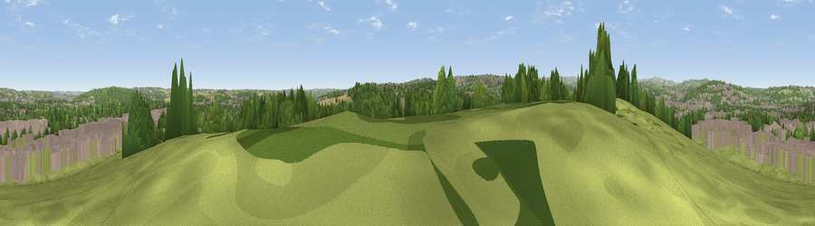

Viewpoint near Waverley
#26278 in England · top 44% of its area beats it · near WaverleyThe view, rendered

A 360° render of this exact spot computed from the terrain model, tree cover and land cover — summer colours, afternoon light, calibrated against photographs of famous viewpoints. Real trees, hedges and buildings will differ in detail.
The panorama
Grey silhouette: terrain skyline in each direction (720 bearings, Earth curvature and refraction included). Dashed green: skyline with trees (+15 m) and buildings (+8 m) as obstacles. Blue strip: how far the ground is visible on each bearing.
Where the view opens
Wedge length = distance to the farthest visible ground on that bearing (vegetation-aware). Rings at 10, 25 and 50 km.
What fills the view
34% built-up · 34% woodland · 28% grassland · 3% cropland
Angular shares of the visible panorama (visual magnitude), not map area. Landscape diversity 0.53 (0–1 Shannon).
Key numbers
More beautiful places nearby
The staircase of upgrades: each row has a higher view potential than everything closer. Driving times are estimates from straight-line distance, calibrated against real road routing — check an actual route before setting out.
| Place | Direction | Drive | Score |
|---|---|---|---|
| Viewpoint near Sheffield | NW · 4 km | ~8 min | 55.0 |
| Viewpoint near Ridgeway | S · 5 km | ~12 min | 60.2 |
| Viewpoint near Ridgeway | S · 6 km | ~13 min | 67.6 |
| Viewpoint near Oughtibridge | WNW · 9 km | ~18 min | 68.4 |
| Viewpoint near Oughtibridge | NW · 10 km | ~19 min | 72.5 |
| Viewpoint near Wharncliffe Side | NW · 12 km | ~22 min | 75.2 |
| Wild Bank | WNW · 42 km | ~62 min | 76.2 |
| Viewpoint near Carrbrook | WNW · 43 km | ~63 min | 77.1 |
53.39113, -1.39511 · source: screening · position refined by local search. Computed location — check access rights before visiting.